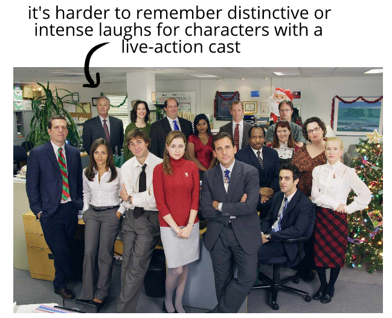

If we recorded a hundred people laughing, we’d have a hundred different laughs—since everyone has a distinctive laugh.
Despite this, unless they're part of a gag, we rarely hear distinctive laughs in live-action movies.
Consider:
Outside of conventional noises
But while
For instance:
Most of the characters in
(and so on)
By contrast, our favorite live action shows probably has less laughing overall, and fewer distinctive laughs among the cast.
Even though we interpret characters in animated spectator entertainment as
That's because just about
Consider:
This gives voice actors practical leeway to create distinctive vocal characterizations. They can make just about any sound, and not worry about how they look making them!
This is different than an actor, who has to laugh while also remaining visually normal to audiences.
We relate to characters with coherent, vivid, and individualized spectator humor profiles. That's one reason we find animated characters to be emotionally responsive and relatable—they laugh a lot, and distinctively!
Sitcom characters often feel more emotionally flat in comparison—they rarely laugh, and when they do it's often artificially generic.
(and so on)
It's probably harder to remember scenes of these characters
When we watch these characters, we'll find their laughs are mostly forgettable—more like an abstract cue, similar to how a novel might say
By contrast, some animated characters like Homer Simpson or Rick Sanchez have an iconic laugh that fans would instantly recognize—which isn't something that could be said of most famous live-action characters.